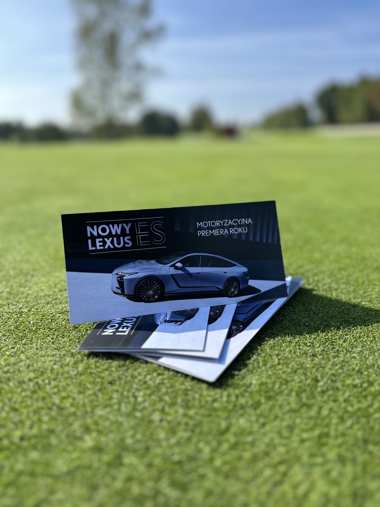
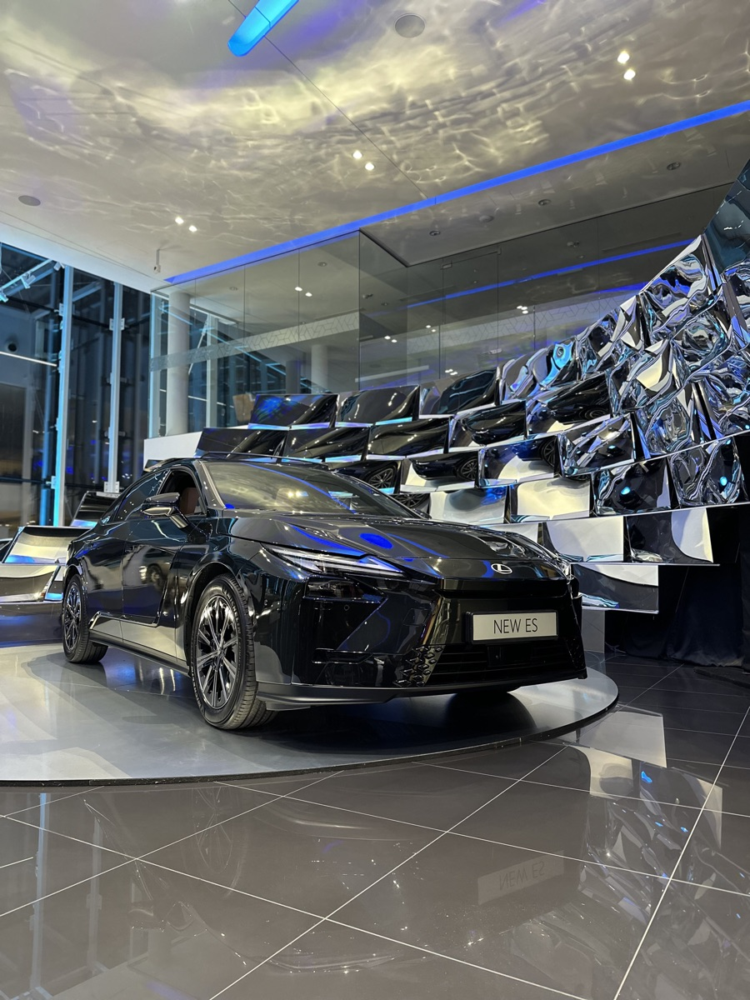
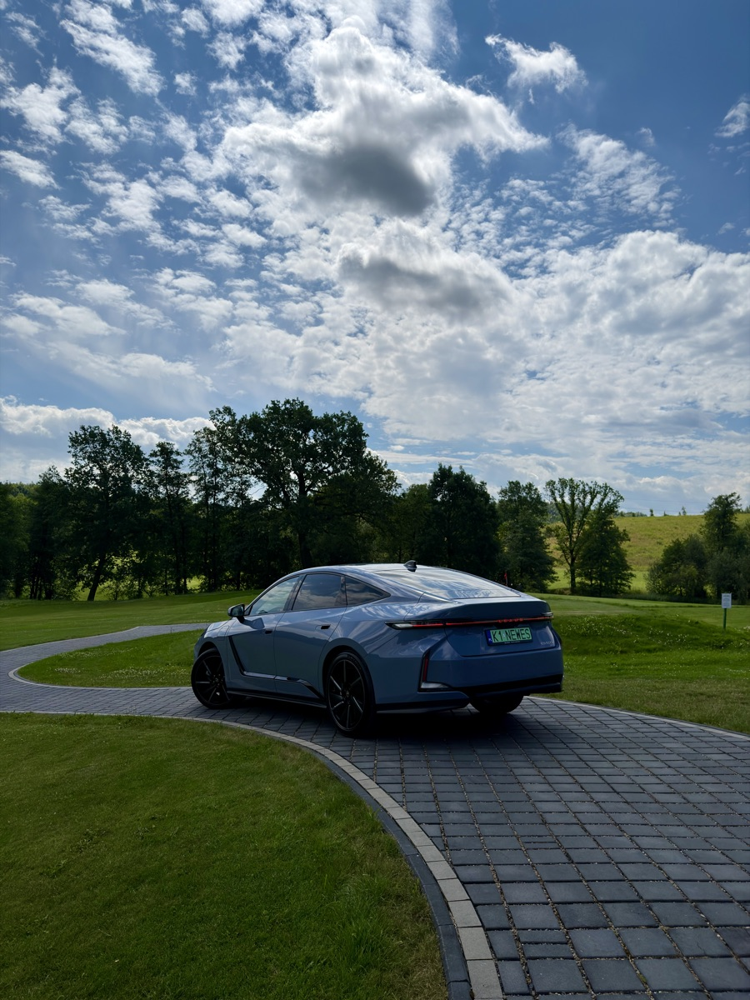
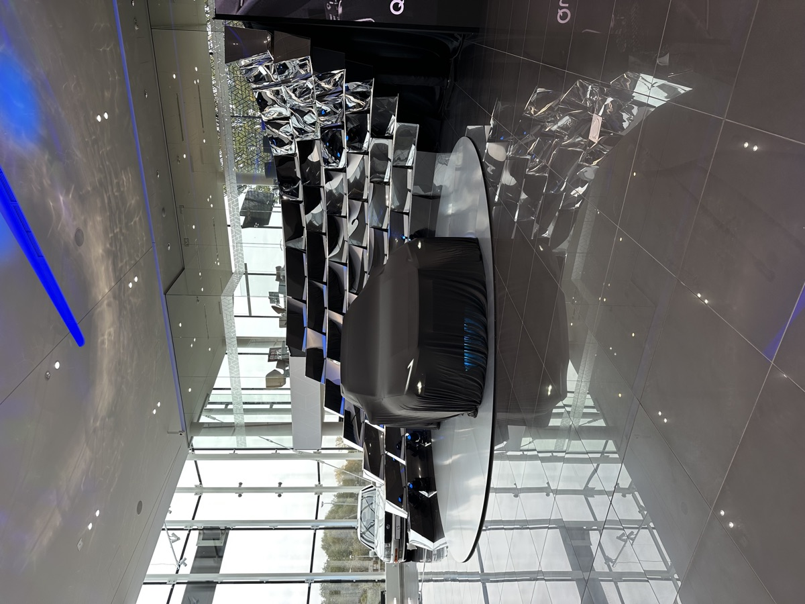
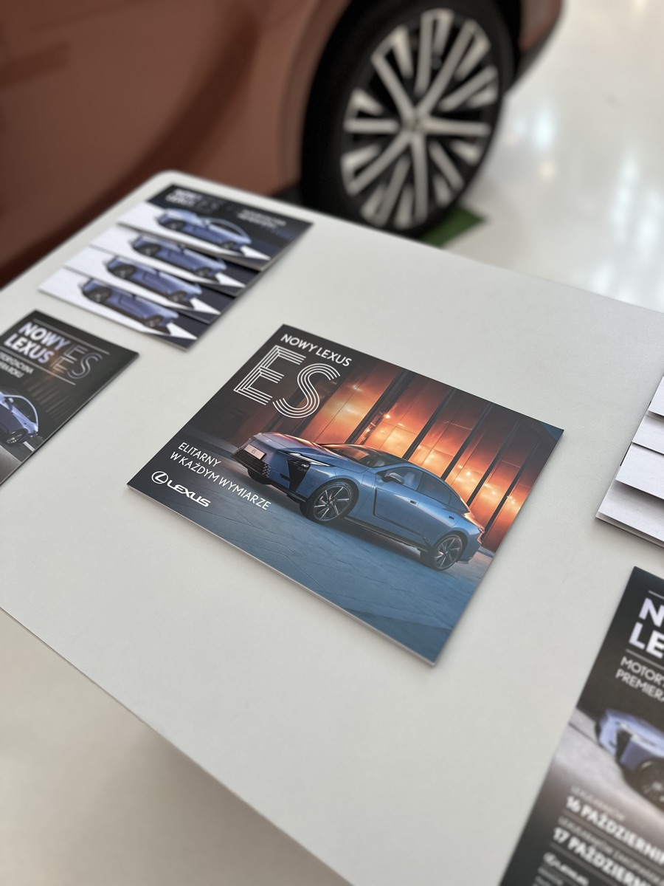

A pre-premiere showing of the new Lexus ES, held over two days in October 2025 at the Kraków-Zakopiańska dealership. Format: open house — guests arrived when it suited them, rather than to a fixed programme. Part of the audience was invited personally by staff; the rest signed up through social media forms.
The event carried two objectives at once. Commercially, it introduced the model to the local market and supported sales across the range. Relationally, it was a demonstration of service standards to existing owners of the brand.
The car sat on a stage built for it. The showroom was dressed in a colour scheme drawn directly from the model. Catering and drinks followed a Japanese register. Staff wore a single, coordinated look and each person had a defined role for the two days.
Guests could look at the car, talk to an advisor, take a test drive, configure a car to their own specification and place an order — in that sequence or none of it, at their own pace.





Three audiences were in the showroom at the same time, and they wanted different things from it.
Some came to buy, and did. Some came because the car was new and they were curious — no intention beyond looking. And some came to be seen: existing owners who wanted time with their salesperson, in a room where being a Lexus customer meant something.
A fixed programme would have served one of those three and made the other two uncomfortable. The open-house format served all three, because it asked nothing of anyone — no start time, no seating, no obligation to stay for a presentation.
The numbers the event produced are accurate. What they cannot show is that these were three different events happening in one room, and that the format is the reason it worked.
The open-house format was the design decision, not a scheduling convenience. Omotenashi assumes hospitality that anticipates rather than imposes: the guest sets the pace and the host has already prepared for it. Fixing a start time would have inverted that.
The same logic ran through the details — the colour scheme, the catering, the coordinated staff appearance, the division of roles. None of it was visible as effort. That is the point. Attention to detail registers with a guest as ease, not as ceremony.
The event reported attendance of roughly 400-500 people across two days and over 30 cars sold. Both figures are attributable to the event itself — two days, one location, one reason to be there.
What no figure distinguishes is the three audiences. The buyer, the curious visitor and the owner who came for the room are counted identically. So the decision that made the event work — the open format — has no evidence behind it. It worked, but nothing in the reporting says why, which means the next event starts the argument from zero.
The fix is not a system. It is one question, asked at the door: is this your first time with us? One field, two values, asked by whoever greets the guest — which in this format is someone who is already greeting them.
That single split turns one attendance number into three: existing owners, returning prospects, first contacts. It answers whether the open format brought in new people or gave existing customers a reason to come back — two entirely different outcomes currently reported as the same number.
Nobody at dealer level owns this decision. Sales owns the sale, marketing owns the invitation, and the event sits between them belonging to neither. That is why the question doesn't get asked — not cost, not technology. The measurement gap here is organisational, not technical.
[TODO — closing statement]
[TODO — CTA label] →